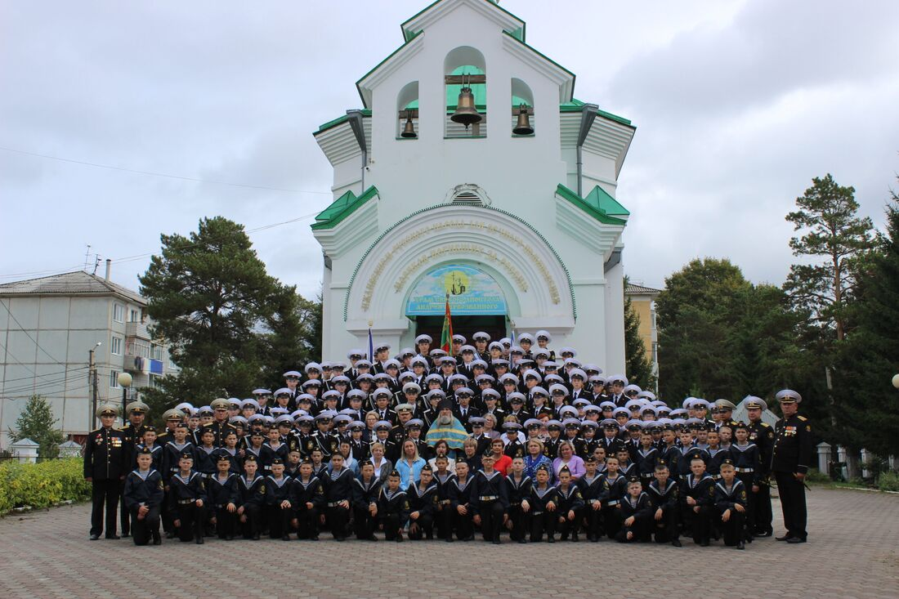
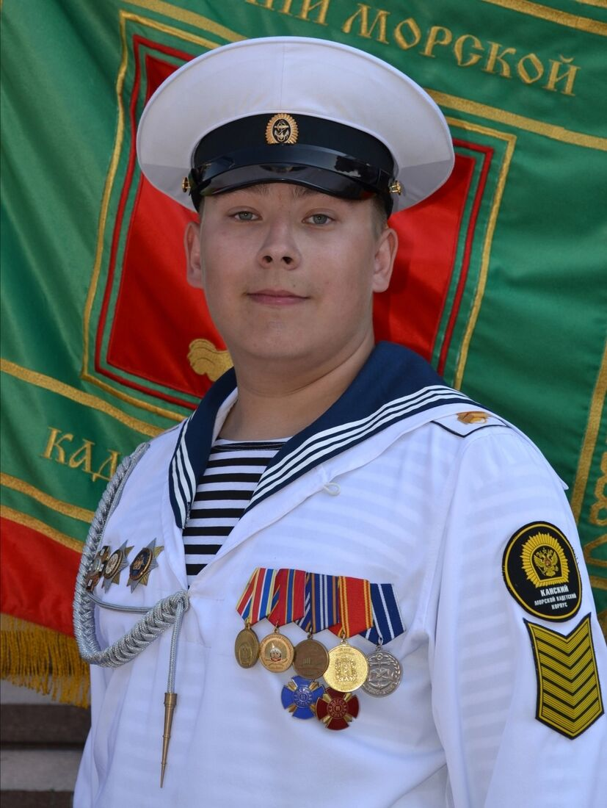

Кадетский Парламент Канского Морского Кадетского Корпуса
Орган ученического самоуправления, развивающий лидерские качества кадет
О Кадетском Парламенте
Кадетский Парламент - законодательный и представительный орган ученического самоуправления Канского Морского Кадетского Корпуса. Он олицетворяет собой принципы чести, долга, справедливости и коллективной ответственности, служа фундаментом для развития кадетской демократии и формирования подлинного корпоративного духа.
Основанный на принципах всеобщего, равного и прямого избирательного права при тайном голосовании, Парламент формируется путём подсчета общего количества голосов за каждого из кандидатов. Таким образом, в его состав попадают самые достойные представители корпуса — кадеты, чьи лидерские качества, активная гражданская позиция, безупречная репутация и преданность идеалам снискали всеобщее уважение и доверие.
Это — не только орган управления, но и кузница будущих руководителей. В его стенах на практике постигаются азы правовой культуры, стратегического планирования, искусства переговоров и коллективного принятия решений.

История Кадетского Парламента
Создание Парламента
Реформирование бывшего органа ученического самоуправления КСоЛД в Кадетский Парламент кадетом 9-ого класса, Каверзиным Иваном Игоревичом. Первые выборы председателя и членов парламента.
Первые крупные изменения
Организация первых масштабных мероприятий, создание положения о Кадетском Парламенте, формирование состава Парламента, начало работы.
Первые результаты
Завершение года, подведение итогов и выявление лучших по истечению периода. Подача отчетов Директору корпуса.
Межкорпусное сотрудничество
Налаживание партнерских отношений с кадетскими парламентами других корпусов, проведение совместных онлайн - встреч и обмен опытом.
Окончание срока Первого Председателя
Награждение похвальными грамотами и орденами "Военно - Морской Флот".
Создание первого сайта Парламента
Развитие в цифровой сфере для увеличения массовой известности в кругах корпуса, города и края.
Достижения за годы работы

Награды
За активную работу на корпусном уровне, первый Председатель и Вице-Председатель Парламента были удостоены Высшей Награды Парламента, ордена "Военно-Морской Флот", а также Благодарственной Грамоты от Директора Корпуса.

Участники
Более 40 кадет приняли участие в работе Парламента за всю историю его существования, активно развивая Орган на корпусном уровне и проявляя инициативу в развитии отношений между кадетами и администрацией.

Проекты
Под руководством Парламента в 2025 - ом учебном году было положено начало разработке проекта "Каток" для облагораживания и продуктивной эксплуатации прилегающей к корпусу территории.
Лучшие кадеты Парламента
Гордость нашего корпуса - кадеты, проявившие выдающиеся лидерские качества и внесшие значительный вклад в развитие Парламента

Каверзин Иван Игоревич
Выпускник Канского Морского Кадетского Корпуса (2024), серебряный медалист, лауреат государственных премий Союза Писателей России, за заслуги награжден Благодарственным письмом и Орденом "Военно - Морской Флот".
Достижения:
- Выступил с инициативой создания Кадетского парламента, доказав его необходимость для развития корпуса.
- Лично разработал и сформировал Положение о Кадетском парламенте — основной документ, определяющий его цели, задачи, права, обязанности и структуру.
- Был избран первым председателем, что является признанием его лидерских качеств и авторитета среди кадет. На этом посту он заложил традиции работы парламента, наладил взаимодействие между кадетами и администрацией корпуса.
Потылицын Лев Евгеньевич
Выпускник Канского Морского Кадетского Корпуса (2024), активист Кадетского Парламента, за заслуги награжден Благодарственным письмом и Орденом "Военно - Морской Флот".
Достижения:
- Организация нового Медиационного Отдела в Отделе Дисциплины Кадетского Парламента, активный контроль дисциплины в корпусе в учебное и внеурочное время.
- Активное участие в организации Корпусных Мероприятий, проявление инициативы и выдвижение предложений для их организации.
- Помощь в разработке Положения о Кадетском Парламенте, инициатива создания поощрительной меры стимулирования (орден "Военно - Морской Флот"), особый вклад в развитие дисциплинарного отдела Парламента, безупречное ведение работы на посту Министра Отдела Дисциплины.
Макиенко Дмитрий Михайлович
Кадет 9-ого класса, Секретарь Кадетского Парламента (2025-2026).
Достижения:
- На протяжении двух лет активно участвует в организации корпусных мероприятий, также ведет мероприятия, посвященные знаменательным датам и открытиям Аллей Памяти по приглашению от города Канска.
- Активный член Кадетского Парламента, вступивший в год основания. Проявляет инициативу в делах Органа, за что был удостоен высокой должности "Секретарь Кадетского Парламента".
- Служит примером для младших товарищей, участвует в подготовке вновь прибывших обучающихся пятого класса к принятию Кадетской Клятвы, уча пятиклассников элементам строевой подготовки и нравственным принципам кадетской жизни, создавая важную базу для будущего обучения пятиклассников в Кадетском Корпусе.
Галерея достижений

Награды наших кадет
За последние 3 года кадеты Парламента получили более 70 наград, участвуя в олимпиадах, соревнованиях и конкурсах различных уровней (от муниципального до международного).

Выпускники-медалисты
2 выпускника-члена Парламента закончили корпус с золотыми медалями за последние 3 года. Медалисты без проблем смогли поступить в ВУЗ-ы страны, которые выбрали изначально.

Поступления в вузы
100% выпускников-членов Парламента поступают в высшие учебные военные и гражданские заведения Российской Федерации имея запас и высокие места в рейтингах поступления.
Направления деятельности

Учебная подготовка
Проверка учебников, помощь отстающим кадетам в повышении успеваемости путем объяснения пропущенного или непонимаемого материала.

Внутренняя работа
Решение конфликтов между кадетами, работа по соблюдению порядка во время учебного процесса, помощь кадетам в строевой подготовке.

Патриотические мероприятия
Организация мероприятий, направленных на формирование любви к Родине и уважения к флотским традициям. Проведение уроков мужества, встреч с ветеранами.
Свяжитесь с нами
Адрес
Канский Морской Кадетский Корпус
ул. Герцена 11, г.Канск, Красноярский край, Россия
Fo8983@yandex.ru
Время работы
Пн-Вс: 8:00 - 21:00
Председатель Парламента
Жданов Дмитрий Иванович
Мы в социальных сетях
Подписывайтесь на наши страницы, чтобы быть в курсе всех событий и мероприятий!